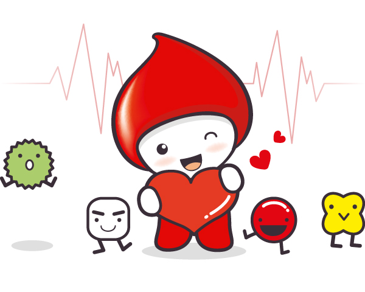
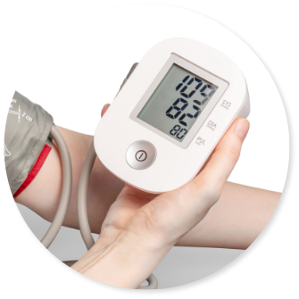
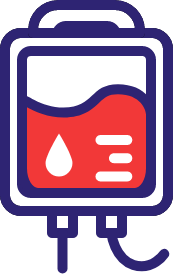
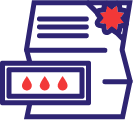
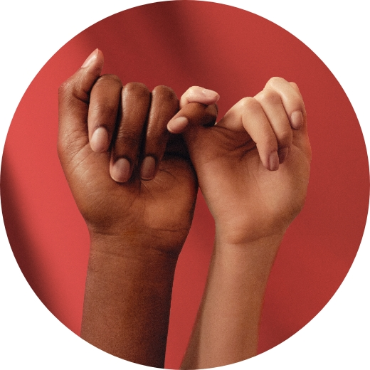
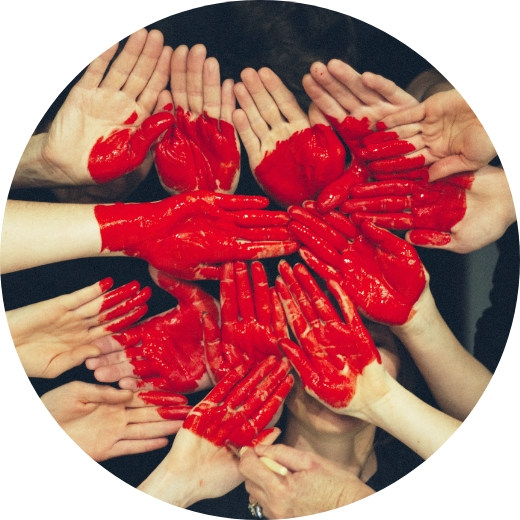
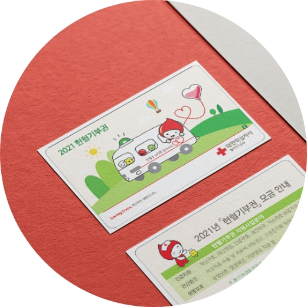

헌혈을
왜 해야할까?
헌혈은 수혈이 필요한 환자의 생명을 구하는 유일한 수단입니다. 혈액은 아직 인공적으로 만들 수 있거나, 대체할 물질이 존재하지 않습니다. 우리는 언제 수혈을 받을 상황에 처할지 모릅니다. 건강할 때 헌혈하는 것은 자신과 사랑하는 가족을 위하여, 더 나아가 모두를 위한 사랑의 실천입니다.
헌혈에 필요한 준비물
-
- #신분증
- 2004년 7월 1일부터 헌혈실명제 실시!
주민등록증, 여권 등 사진과 주민등록번호가
확인가능한 것을 말합니다.
-

- #헌혈 전 검사
- 문진 간호사는 헌혈자가 작성한 헌혈기록카드를
확인 후 몸무게, 헤모글로빈 수치 및 혈압,
맥박, 체온을 측정합니다.
-
- #건강한 몸
- 헌혈 전 날 격한 강도의 운동을 삼가고
충분한 수면과 수분섭취를 합니다.
헌혈의 종류
헌혈자는 전혈헌혈과 성분헌혈 중 하나를 선택할 수 있으며,
당일 혈액제제별 병원수요량에 따라 간호사가 특정 헌혈종류를 권장하기도 합니다.
-
전혈헌혈
- 전혈헌혈
- 혈액의 모든 성분(적혈구, 백혈구, 혈장, 혈소판)을 채혈
-
혈장성분헌혈
- 혈장성분헌혈
- 혈장만을 채혈하고, 나머지 성분은 헌혈자에게 되돌려 주는 헌혈

-
혈소판성분헌혈
- 혈소판성분헌혈
- 혈소판만을 채혈하고, 나머지 성분은 헌혈자에게 되돌려주는 헌혈
-
전혈헌혈
- 혈소판혈장성분헌혈
- 혈소판과 혈장 성분을 채혈하고, 나머지 성분은 되돌려 주는 헌혈
헌혈자 사은품
GIFT FOR YOU
-
햄버거 교환권
-
문화상품권
-

헌혈 기부권
-
여행용 세면도구 세트
-
영화티켓 교환권
-
커피 교환권
헌혈의 집 지점별로 기념품 항목이 상이할 수 있습니다.
생명을 살리는, 우리
SAVING LIVES
-

- ABO Friends
- 정기적으로 헌혈에 참여할 것을 약속하고
대한적십자사 ABO Friends로 가입하는 제도 입니다.
-

- 나눔히어로즈
- 매년 반복되는 특정시기 혈액수급의 어려움을 해소하기 위해,
해당시기 전혈에 참여해줄 것을 약속하는 제도 입니다.
-

- 헌혈 기부권
- 헌혈을 통한 생명나눔에 기부를 통한 물적나눔을 더하여,
헌혈 후 기념품 대신 그 금액만큼을 기부하는 제도입니다.